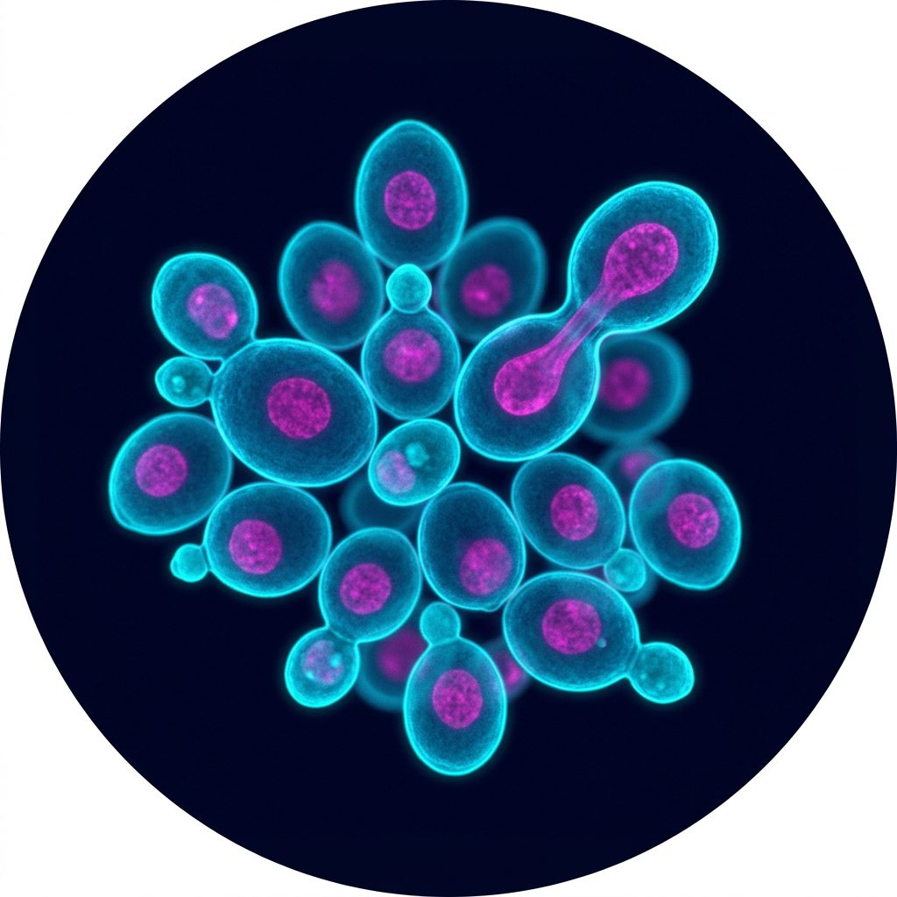
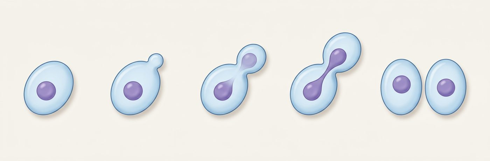

AI 生成示意图 · 出芽酵母| 基因 | 执行点 | 终止点与形态 |
|---|---|---|
| cdc-1 369D-1 | 出芽起始前后 | 停在执行点：单细胞带一个不再长大的小芽、单核（压片后 ≥75% 可见小芽） |
| cdc-2 370D-1 | 出芽起始前后 | 停在有丝分裂：两个近等大细胞，核位于颈部，常呈哑铃形 |
| cdc-3 104D-1 | 与前两者同期 | 无确定终止点：不再分离，但出芽和核分裂继续，形成多突起、多核细胞，最终裂解 |
保证事件有序推进的基因、产物和功能“基本未知”。生化方法只能看到事件本身，看不到背后的开关。
分裂基因是必需基因，直接敲掉细胞就死了。温度敏感突变在 23 °C 正常、36 °C 失灵，等于给基因装上一个随时可按的开关。
临床类比：像在手术流程里逐个“暂停”某个岗位——手术停在哪一步，就知道这个岗位在哪一步不可缺；如果停在更后面，说明这个岗位提前做了后面要用的准备。
亲本 A364A 经亚硝基胍诱变，得到温敏单倍体 ts-369、ts-370、ts-104。
与非温敏株杂交、四分体解剖，缺陷均 2:2 分离（单个核基因）；再配成纯合二倍体。对照：A364A D-4。
23 °C 对数期细胞点到预热 36 °C 平板，网格定位同一视野连续拍照；每株观察 100+ 个细胞。
液体培养后测大小分布（Fig. 3）、Giemsa 染核（Fig. 4）、显微操作拆分 44 个细胞。
| 项目 | 细节 |
|---|---|
| 菌株 | 369D-1（cdc-1）、370D-1（cdc-2）、104D-1（cdc-3），均为纯合二倍体 |
| 温度 | 许可 23 °C；限制 36 °C |
| 对照生长 | 野生型二倍体 36 °C 下约 2.5 h 一代；三个突变株 23 °C 生长速度与之相近 |
| 筛选规模 | 约 100 株温敏突变株做延时摄影，15 株整群表现一致 |
| 大小分布 | 36 °C 液体培养至全部到达终止点，轻度超声，按芽/母体积比分 6 类 |
| 核染色 | Helly 固定 + Giemsa，部分用核糖核酸酶替代盐酸水解 |
| 显微操作 | 104D-1 取 44 个带小芽细胞，36 °C 6 h 后拆开计数 |
据原文正文与 Fig. 5 思路重绘的示意图，非原图；时间位置为示意。
作者推想：从上次分裂到出芽之间，可能完成了“为后面整个周期编程”的许多功能——这正是后来 Start 概念的雏形。
cdc-2、cdc-3 早早起作用，缺陷却在后面才暴露：早期事件是后期事件的前提。
细胞分散在周期各处，相当于一次升温同时“采样”了所有时刻。
无芽或极小芽的细胞停在 2 个大细胞；芽较大的细胞完成本轮、再出芽，停在 4 个大细胞。
升温后 1 h 内新出的少数芽还能长大，之后出的芽都停在小芽。
“更靠前的细胞比更靠后的细胞少走一圈”——这个判据适用于任何只在一个阶段起作用的基因。

AI 生成的出芽周期示意，非原文照片；原文 Fig. 1–2 为延时显微照片，见 PMC 全文。
已有芽的细胞把芽养大；之后新出的芽全部停在小芽。→ 出芽前有一步必须在许可温度下完成。
终态只有大细胞，没有小芽：两个或四个大细胞，取决于升温时芽的大小。
升温后新出的芽都异常，长成长突起，约每一代时间再长一个；最终裂解。
44 个带小芽细胞在 36 °C 6 h 后：
40 个分成 2 个细胞
3 个仍是 1 个 · 1 个分成 3 个
→ 多数完成当轮分离后，再也不分离。
读图要点：延时摄影只能看形态；作者用三种独立读数分别回答“停在哪”“分开没有”“核分了没有”，三者一致才下结论。这是“多读数交叉验证”的早期范例。
只要某基因只在周期的一个阶段起作用，就能被这种方法捕获；判据只是“越过某阶段的细胞多走一圈”。
从上次分裂到出芽之间，可能完成了为后面整个周期“编程”的许多功能。
有些基因早早起作用，用来保证后面事件的完成，这可能是周期有序推进的关键。
从 cdc-3 看，细胞分离不是出芽和核分裂的前提。这类突变可以用来解析事件间的依赖关系。
Hartwell 与 Hunt、Nurse 因发现细胞周期关键调控因子，分享 2001 年诺贝尔生理学或医学奖。
同一系列筛选后来找到 CDC28——芽殖酵母的 CDK，与裂殖酵母 cdc2、人 CDK1 同源。
Hartwell 1974 年 Science 综述用这些突变排出事件顺序，提出 Start（PMID 4587263）。
“出芽前完成编程”与哺乳动物限制点（Pardee 1974）思路相通：过点之后，周期基本自动走完。
“早期事件是后期前提”为后来检查点概念（Hartwell & Weinert 1989）埋下伏笔。
芽殖酵母 CDC2 ≠ 裂殖酵母 cdc2：前者编码 DNA 聚合酶 III（今称 δ）大亚基（Boulet 1989，PMID 2670563）——所以 cdc-2 停在有丝分裂前。
CDC3 产物定位在母芽颈部，属隔膜蛋白（septin）家族（Kim 1991，PMID 1993729）——解释了“不能分离”。
一个可检验的小问题（推测）：照射后 24 h，激活中的卫星细胞主要堆在 G1 还是 G2/M？如果 p21 升高为主，预期更多停在 G1——需要实验回答。
| 术语 | 一句话 | 术语 | 一句话 |
|---|---|---|---|
| 温度敏感突变 temperature-sensitive, ts | 许可温度下正常，限制温度下失灵 | 许可 / 限制温度 permissive / restrictive | 本文为 23 °C / 36 °C |
| 执行点 execution point | 基因功能平时被完成的时刻 | 终止点 termination point | 功能缺失时细胞停下的阶段 |
| cdc 突变 cell division cycle | 阻断周期特定步骤的突变 | 出芽 budding | 芽殖酵母的分裂方式，芽大小反映周期进度 |
| 延时摄影 time-lapse photomicroscopy | 同一视野按时间连续拍照 | 四分体分析 tetrad analysis | 解剖孢子，看性状是否 2:2 分离 |
| 不同步培养 asynchronous culture | 细胞分散在周期各个位置 | Start | 后来命名的芽殖酵母 G1 晚期承诺点 |
每个酵母细胞身上长着一个芽，芽越大，说明它在分裂流程里走得越远。Hartwell 找到一些坏了开关的酵母，一加热某一步就失灵。他把加热后的细胞一直拍下来，看它们最后停成什么样，就知道这个开关管哪一步；再看哪些细胞还能多走一圈，就知道这个开关平时什么时候打开。
记忆执行点和终止点分别指什么？
执行点：基因功能平时完成的时刻；终止点：功能缺失时细胞停下的阶段。
理解为什么必须用温度敏感突变？
周期基因是必需基因，普通缺失突变无法存活；ts 突变能在许可温度保种，再按需关掉。
应用无芽细胞停在“两个大细胞”，大芽细胞停在“四个大细胞”，执行点在哪？
约在出芽起始：大芽细胞已越过它，多走了一圈（即 cdc-2 的表现）。
分析cdc-3 说明了哪两类事件互不依赖？
细胞分离与出芽、核分裂：不分离时后两者照常进行。
评价只凭形态判断终止点，最大漏洞是什么？作者怎么补的？
分不清“分开没有”“核分了没有”；作者补了大小分布、Giemsa 染核和显微操作。
Hartwell LH, Culotti J, Reid B. Genetic control of the cell-division cycle in yeast, I. Detection of mutants. Proc Natl Acad Sci USA 1970;66(2):352–359.
PMID 5271168 · doi:10.1073/pnas.66.2.352 · PMC283051 全文
本页数字均取自原文正文。示意图为自绘或 AI 生成，未复制原文图片。